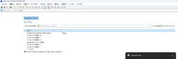
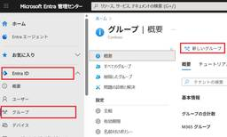
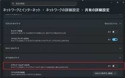

JBS Tech Blog
https://blog.jbs.co.jp/
JBS Tech Blogは、日本ビジネスシステムズ（JBS）の社員が分担して執筆を担当し、技術情報を発信しているブログです！Microsoft製品や生成AI関係の最新情報をはじめ、様々な製品やサービスの情報を幅広く公開しています。2022年3月より運用を開始し、毎営業日の1記事以上公開を継続中です！
フィード
秘密度ラベルのアクセス許可権限別の操作可能範囲
JBS Tech Blog
Microsoft Information Protectionの秘密度ラベルを適用したコンテンツを利用するユーザーは、割り当てられたアクセス許可によって実行可能な操作範囲が異なります。 本記事では、各権限で実行可能な操作範囲の違いを整理したうえで、権限名からは操作可否が具体的に判断しづらい点を、実施した検証結果を基にご紹介します。 各権限の操作可能範囲 各権限での画面キャプチャ可否 事前準備 閲覧者権限を持つ場合 制限付きエディター権限を持つ場合 編集者権限を持つ場合 所有者権限を持つ場合 各権限でのTeams会議の画面共有時における共有相手側の閲覧可否 画面共有者がファイルに対して閲覧者権…
1日前

Microsoft Forms＋Power Automateでアカウント払い出し申請を自動化！アダプティブカード承認付きフローの作り方
JBS Tech Blog
本記事では、Microsoft Forms と Power Automate を組み合わせて、アカウント払い出し申請を自動化する方法を解説します。利用者は Forms から申請するだけで、上長やシステム管理者には Teams のアダプティブカードで承認依頼が届き、ワンクリックで承認／却下が可能。
2日前

【Microsoft×生成AI連載】【Copilot Studio】エージェントの評価機能を使ってみた
JBS Tech Blog
【Microsoft×生成AI連載】原田です。今回は、Copilot Studioの評価機能（エージェントの回答品質を測定・テストする機能）を試してみました。 従来、エージェントの回答品質をテストするためには、一回一回時間をかけて行う必要があり、改善のためにプロンプトを修正しても、他の回答に悪影響が出ていないかを把握するのは困難でした。 こうした悩みを解決するのが、Copilot Studioの評価機能です。回答品質を定量的に測定・テストできるこの機能を活用すれば、精度の高い運用が実現します。 今回は、「AIによるテストセットの自動作成から、回答精度の評価まで」の一連の手順を試してみました。 …
2日前

Wireshark入門（準備と基本操作編）
JBS Tech Blog
Wiresharkは、ネットワーク上を流れるデータを パケット単位で捕捉・解析 できるツールです。 Wiresharkで取得ができるパケットキャプチャは、ネットワーク障害調査や通信の仕組みの学習、セキュリティ診断などに活用されます。 本記事では、Wiresharkを初めて使う方向けに基本操作方法を解説します。 Wiresharkのインストール キャプチャの取得方法 キャプチャの停止と保存 まとめ Wiresharkのインストール Wiresharkは、Windows、macOS、LinuxのいずれのOSでも利用できます。 今回は、Windows版を例にご紹介します。 公式サイト（https:/…
2日前

PIM for Groupsを利用した特権管理のスマート化
JBS Tech Blog
クラウド環境やMicrosoft 365の利用が進む中、管理者権限を持つアカウントの管理は情報セキュリティリスクを考える上で必要不可欠です。 また大規模な組織では複数の管理者ロールやアクセス権を一元的に管理することは非常に煩雑になり、セキュリティと運用効率の両立が課題となります。 そこで注目されるのがMicrosoft Entra Privileged Identity Management(以下 PIM) です。特にグループ単位で権限管理を可能にする PIM for Groupsは、複雑なロール管理を簡素化し、セキュリティを維持しながら運用の効率化が可能になります。 本記事では、Micros…
3日前
Fabricワークスペース内でレポートに紐づいていないセマンティックモデルを出力する方法
JBS Tech Blog
本記事では、Microsoft Fabric／Power BI のワークスペース内で「レポートに紐づいていないセマンティックモデル（データセット）」をPowerShellで抽出し、CSVとして一覧出力する方法を解説します。Get-PowerBIDatasetとGet-PowerBIReportを用いて、レポートが参照しているDatasetIdとの差分を取り、未利用候補となるセマンティックモデルを効率的に洗い出す手順を紹介。不要なモデル整理やガバナンス強化に役立つ実践的なスクリプト付き解説です。
3日前
アダプティブ カード デザイナーの使い方：その4 アダプティブ カードを新規作成してみる
JBS Tech Blog
アダプティブカードデザイナーを用いた実践的なカード作成手順を紹介。簡単にアンケートカードを作成する方法をご紹介します。
3日前
OpenManage Enterprise Integration for VMware vCenter を導入してみた
JBS Tech Blog
Dell PowerEdge サーバーを VMware vCenter （以降、vCenter ）環境で運用していると、ハードウェアの状態確認やファームウェア管理をより効率的に行いたい場面が多くあります。 OpenManage Enterprise Integration for VMware vCenter （以降、OMEVV ）は、Dell OpenManage Enterprise（以降、OME ）と vCenter を連携させる公式プラグインです。vCenter から Dell サーバーのハードウェア情報やアラートを直接確認できます。 本記事では、OMEVV プラグインのインストールお…
3日前
Fabric のワークスペース一覧を PowerShell で取得してExcelに出力する方法
JBS Tech Blog
Microsoft Fabric を使い始めると、ワークスペースが増えてきます。そうすると、下記のような情報を「一覧」で把握したくなる場面が増えてきます。 ワークスペースがいくつあるのか どの容量を利用しているか この記事では、Fabric のワークスペース一覧を PowerShell で取得する手順を紹介します。あわせて、Excel で開ける形式（CSV）に出力する方法も、なるべくシンプルに解説します。 Microsoft Fabricとは 前提 手順 モジュールのインストール モジュールのインポート Power BIサービスにサインイン ワークスペース情報の取得 CSVに出力する CSVフ…
4日前
【Microsoft×生成AI連載】【Microsoft Fabric】Copilot for Data Engineeringを使ってみた（その1）
JBS Tech Blog
Microsoft Fabricはデータ収集・加工・分析・可視化、AI活用を一元化するクラウドベースの分析プラットフォームです。 その中の一つであるData Engineeringでは、Copilotを活用することでPythonやPySpark、T-SQLのコーディング知識がなくても自然言語でコード生成が可能になり、データ準備やデータから迅速にインサイトを得ることができます。 本記事では、Copilot for Data Engineering(以降、Data EngineeringのCopilotと記載)についてFabricにおけるData Engineeringの概要を知りたい方、Data…
4日前
OCI リソース・スケジューラでインスタンスを自動シャットダウンする
JBS Tech Blog
OCIのリソース・スケジューラを使ってインスタンスを定時で自動シャットダウンする方法をご紹介します。
4日前

【Windows11】WindowsUpdateで「パスワード保護共有」が自動的にオンに戻る現象と対策
JBS Tech Blog
Windows Updateの適用後に「パスワード保護共有」の設定が既定でオンに戻る現象が確認されています。 特に、社内ネットワークで匿名アクセスやGuestアカウント経由で共有されているフォルダ／プリンタを利用している場合、業務影響が出る可能性があります。 本記事では、この現象の概要と影響、そして管理者として取るべき対応方針を解説します。 パスワード保護共有とは 24H2アップデート後の変化 設定変更には管理者権限が必須 業務影響と対策 想定される影響 対策案 まとめ パスワード保護共有とは 「パスワード保護共有」は、LAN上の共有フォルダやプリンタへのアクセス時に、必ずユーザー認証（ユーザ…
4日前
SharePointサイト上のExcelファイルをPDF化する
JBS Tech Blog
SharePointサイト上に保存されているExcelファイルをPDF化したいと感じたことはありませんか？ SharePointコネクタにはファイルの種類を変更するためのアクションはありません。そのため、一度OneDrive上にファイルを複製し、「ファイルの変換」アクションにて種類の変更後、再度SharePointサイト上にファイルを複製するという方法が一般的かと思います。 しかし、OneDriveとSharePointサイト上でファイルを移動させるフローは、処理が多く複雑になります。また、APIコール数も増えてしまいます。 本記事では、これを回避する方法として、Power Autoamate…
5日前
Teams通話・Teams Phoneのユーザー検索に利用できる情報を追加する
JBS Tech Blog
Teams通話やTeams Phoneにて組織内のユーザーへ通話をかけるとき、通常ユーザー名（表示名やUPN）で検索しますが、表示名やUPNだけでなく、Entraのプロパティに持たせた値をTeamsのユーザー検索に利用することができます。
5日前
AvePoint Cloud Governanceでチームやサイトのストレージ利用量を部門・会社単位で分析する方法
JBS Tech Blog
本記事は、AvePoint が提供する AvePoint Cloud Governance（以下、ACG）の管理者を対象とした内容です。 チームやサイトのストレージ利用量に応じて、所有部門や所有会社などの単位ごとにコスト負担を算出する際に役立つ、ACG のレポート活用方法を紹介します。 今回は、以前の記事で取り上げた「メタデータ活用」の応用編として解説します。 AvePoint Cloud Governanceでメタデータを利用した台帳管理を行う方法 - JBS Tech Blog 背景 メタデータで管理する理由 イメージ 管理者目線 ワークスペースレポート 管理画面 申請者目線 申請画面 ト…
5日前
OpenManage Enterprise Servicesプラグインをインストール・登録してみた
JBS Tech Blog
OpenManage Enterprise （以降、OME）は、Dell PowerEdge サーバーなどのインフラ機器を一元的に管理できる運用管理基盤です。 その中でも Services プラグイン は、サーバーの保証状況やサポート契約情報の可視化、サポートケース作成の支援など、運用・保守フェーズを効率化するための機能を提供します。 本記事では、OME に Services プラグインをインストールし、Dell サポートとの連携を行う登録作業までを実際に設定した内容をもとに、導入手順や画面の流れを紹介します。これから Services プラグインの導入を検討している方の参考になれば幸いです。…
6日前

Power AppsでForm内の特定の行のみDisplayModeを切り替える
JBS Tech Blog
Power Appsにてフォームを使用する場合に、特定のDataCard（行）のみ編集を可能にしたい、と感じたことはありませんか？ 本記事では、ボタンやトグルを使用して、特定のDataCardの表示モードを設定する方法をご紹介します。 特定項目のDisplayModeのみを切り替える利点は？ 設定方法 Formの「DefaultMode」 対象行のDataCardの「DisplayMode」 対象行以外のDataCardの「DisplayMode」 切り替えボタンの「OnSelect」 FormModeを「Edit」とする理由 まとめ 特定項目のDisplayModeのみを切り替える利点は？ …
9日前
Windows Server デスクトップエクスペリエンスとServer Core比較してみた (2)
JBS Tech Blog
Windows Serverには「デスクトップエクスペリエンス（以下、デスクトップ版）」と「Server Core（以下、Core版）」の2つのインストールオプションがあります。 前回記事では、両オプションの概要からインストール手順までを比較・紹介しました。 blog.jbs.co.jp 本記事では続編として、両オプションにおける基本設定項目の中でも、Core版においてサーバー構成ツール (SConfig)を使用して設定が可能な項目について比較紹介します。 概要 基本項目の設定~SConfigを使用する項目~ IPアドレス、DNSアドレスの設定 デスクトップ版の手順 Core版の手順 リモート…
9日前
【Microsoft×生成AI連載】Excelのエージェントモード（Agent mode）のClaude Opus 4.5モデルをGPT-5.2モデルと比較しながら使ってみた
JBS Tech Blog
Excelのエージェントモード（Agent mode）のClaude Opus4.5モデルを使ってみた。また、GPT-5.2モデルと比較してそれぞれの得意なタスクも検証した。
9日前
Teamsのチームを一括で作成するスクリプト
JBS Tech Blog
Microsoft 365テナントの移行作業を実施する中で、Microsoft Teams（以下、Teams）のチームを一括で作成することがありました。 スクリプトを実行することで、一括で簡単に作成できたので、備忘も込めてこちらにまとめてみました。 インプット用CSVファイルの作成 スクリプトの作成・実行 結果の確認 おわりに インプット用CSVファイルの作成 以下の内容をまとめ、Excelファイルに起票します。 mailNickname：アカウント名（@以降のドメインは不要） DisplayName：チーム名 Visibility：チームの種別（PrivateもしくはPublic） 起票した…
9日前
ユーザーによるOutlook on the webからのMicrosoft 365 グループ作成を制限する方法
JBS Tech Blog
Outlook on the web（以下、OWA）からは Microsoft 365 グループ（以下、M365 グループ）を作成できますが、グループ乱立の防止や運用統制のため制限したいケースがあります。 そのような場合、OWAポリシーの設定により、OWA からの M365 グループ作成を制御することが可能です。 本記事では、OWAポリシーによる M365 グループ作成制御の手順と適用後のイメージについてご紹介します。 M365 グループの作成を制御する方法 PowerShell実行前提作業 OWAポリシーにグループ作成の制御を割り当てるコマンド 適用イメージ 最後に M365 グループの作成…
10日前
Power Automate×Excel：アクションの「ファイル指定方法」による挙動の違い
JBS Tech Blog
ファイル指定方法の違いが同名ファイル差し替え運用に与える影響を解説。安定したExcelフロー実現のための必須Tipsを紹介。
10日前
Ping コマンドの実行結果にタイムスタンプを付加したい
JBS Tech Blog
Windows のコマンドプロンプトで Ping を実行する際に、実行結果にタイムスタンプを付加させたいことはないでしょうか。本記事では Ping の実行結果にタイムスタンプを付加させる方法をご紹介します。 コマンドプロンプトでの Ping の実行結果 Ping の実行結果にタイムスタンプを付加する コマンド |（パイプ）以降の説明 イメージ図 スクリプトによる実行 PowerShell スクリプトファイル（.ps1） bat ファイル おわりに コマンドプロンプトでの Ping の実行結果 コマンドプロンプトで Ping を実行すると、以下のように結果が表示され、タイムスタンプは付加されませ…
10日前
Microsoft Defender for Endpointを利用してリモートでデバイスに接続
JBS Tech Blog
Microsft Defender for Endpoint(以下MDfE)は、企業のPC・スマートフォン・サーバーなどのエンドポイントを高度なサイバー攻撃から守るための、統合セキュリティプラットフォームです。 MDfEの機能は多数ありますが、本記事では最近導入された「ライブ応答機能」について紹介します。 まだ、利用したことがない方や、これから利用する方向けに機能の概要と利用方法について紹介します。 ライブ応答機能の概要 ライブ応答機能とは 主な機能 前提条件 ライブ応答機能の有効化 ライブ応答機能の検証 最後に ライブ応答機能の概要 本章ではライブ応答機能の概要について説明します。 ライブ応…
10日前
Claude CodeをMicrosoft Foundry基盤を使用して導入する方法
JBS Tech Blog
本記事では、Microsoft Foundry上にClaude系モデルをデプロイし、ローカル環境のClaude Codeからそのモデルを向け先として接続・利用する手順を紹介します。
11日前
【Microsoft×生成AI連載】Microsoft 365 Copilotに統合されたSora 2を使ってみた
JBS Tech Blog
本記事ではMicrosoft 365 CopilotでOpenAIの最新動画生成モデル「Sora 2」を利用して、自然な動きの動画を生成してみました。 Microsoft 365 Copilotでの動画生成に興味がある方は、ぜひご覧ください。 ※ この記事の情報は2026/2/25時点のものです。 これまでの連載 機能概要 実際に使ってみた 動画の作成 動画の保存先 動画の編集方法 利用シーンとメリット、注意点 利用シーン メリット 注意点 まとめ おまけ（Copilot Chatによる本記事の要約） これまでの連載 これまでの連載記事一覧はこちらの記事にまとめておりますので、過去の連載を確認…
11日前
【WinSyslog使ってみた】第1回 インストール編
JBS Tech Blog
本シリーズでは、これから全3回に渡ってSyslogソフトの「WinSyslog」について紹介します。 第1回となる本記事は、WinSyslogのインストール方法について説明していきます。 概要 WinSyslogのインストール手順 インストーラのダウンロード サーバーへのインストール インストール後の確認 まとめ 概要 WinSyslogは、Adisconによって1996年にリリースされた、Windows OS上で動作するSyslogサーバです。 詳細については、本製品の取り扱いをされているジュピターテクノロジーの以下リンクに記載されているのでご参照ください。 日本語GUI Windowsで行…
11日前